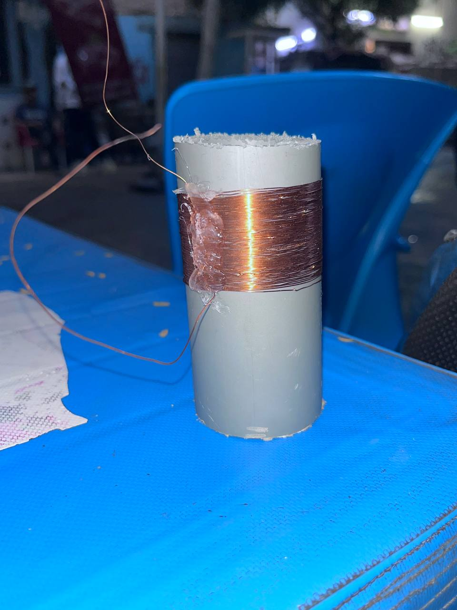
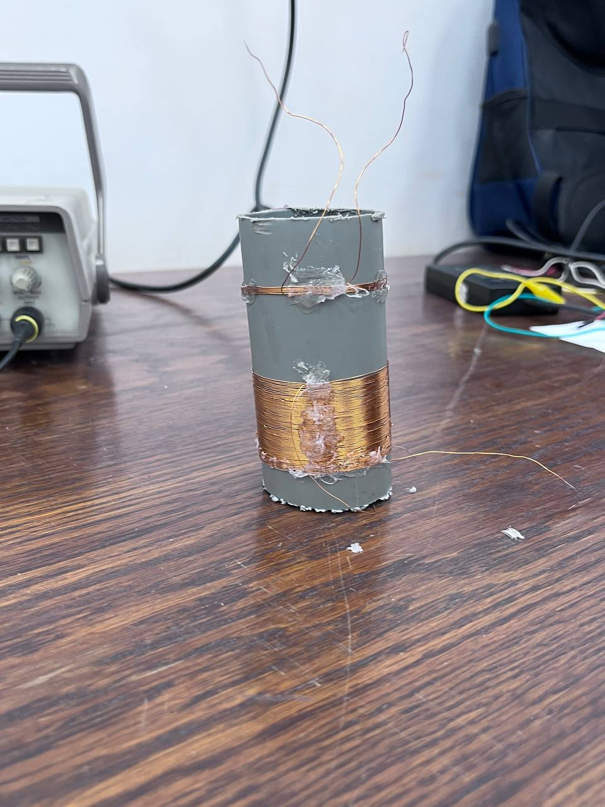
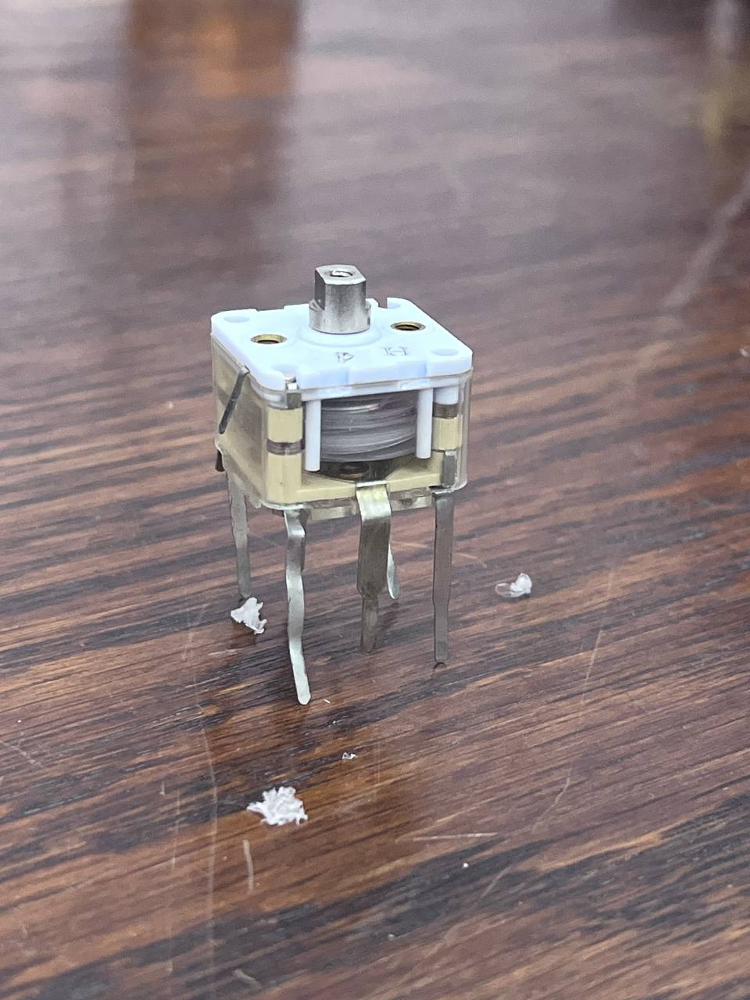
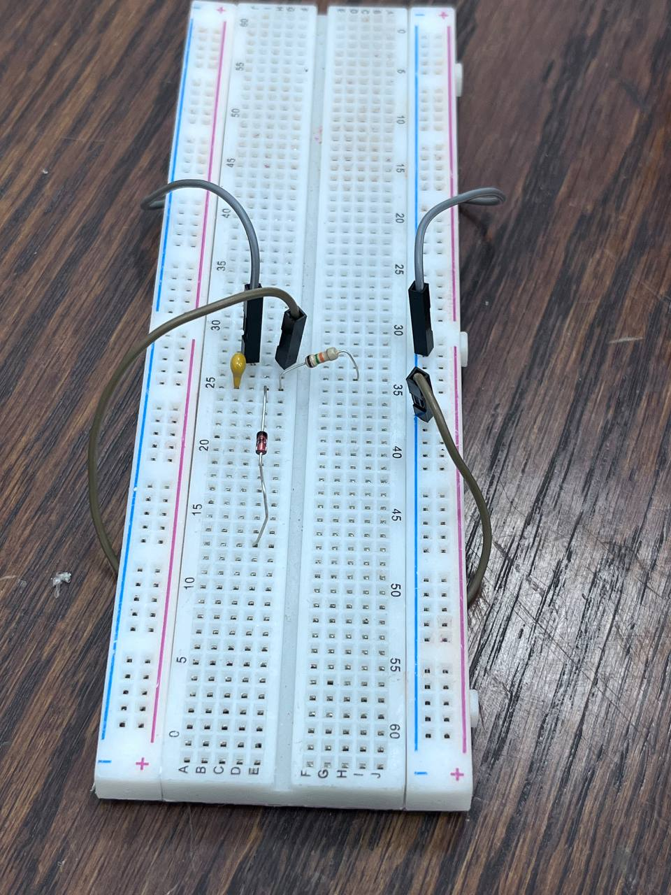
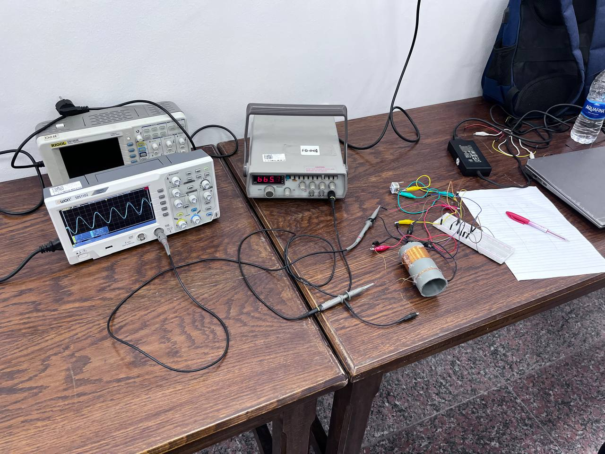
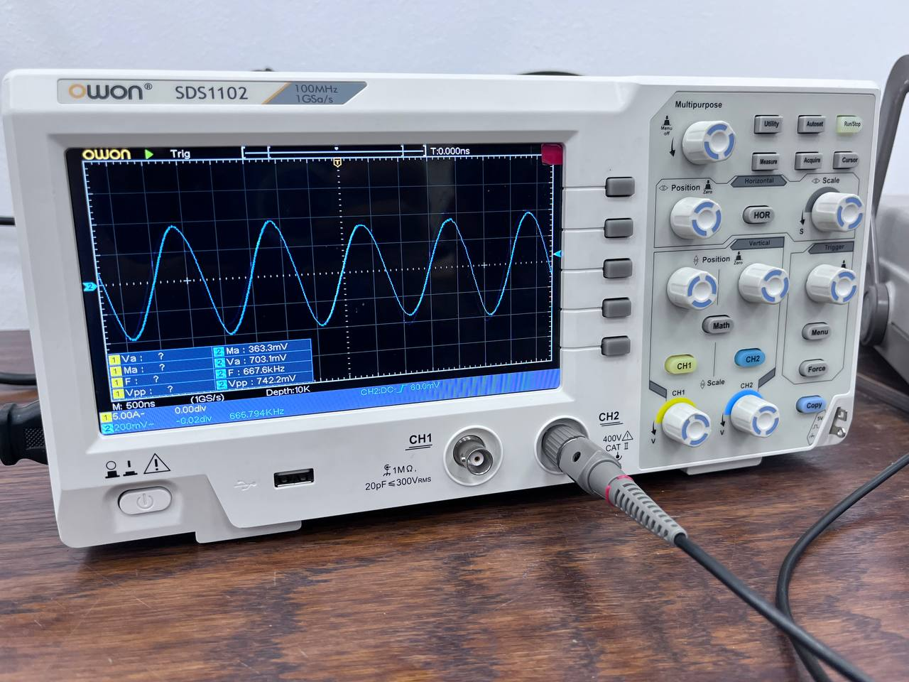
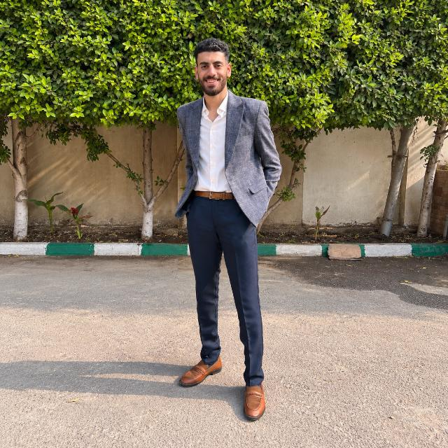

A high-frequency source
The radio band starts near 560 kHz and reaches 2.1 MHz. Finding a function generator that covers kilohertz to megahertz took effort.
A coil and a variable capacitor pick one frequency out of the air. A diode and a capacitor turn that signal into a level we can read. This is how we predicted, built and measured both.
Drag the slider. The tuning frequency of our 291 µH coil changes with the capacitor. The grey tick marks 819 kHz.
An AM radio receives many stations at once. Two circuits sort them out. The tank circuit, a coil (L) and a capacitor (C), builds its largest voltage at one frequency only. The detector, a diode with a resistor and capacitor, follows the peaks of that signal and drops the fast carrier. For a steady sine the result is a DC level. For a station it is the sound.
We drive the circuit without a wire into the tank: the generator feeds a small loop of 5 turns placed a few centimetres from the coil, on the same axis. The signal reaches the coil through its magnetic field. TP1 is the top of the tank and TP3 is the detector output.
Before building, we calculated what the circuit should do. Wheeler’s formula gives the inductance of a single-layer coil in microhenries, with n turns, diameter d and length l in millimetres.
| L (µH) | C for 819 kHz (pF) | f at 280 pF (kHz) | f at 20 pF (MHz) | RC (µs) |
|---|---|---|---|---|
| 291 | 130 | 557 | 2.09 | 49.5 |
The detector’s time constant is RC = 15 kΩ × 3.3 nF ≈ 50 µs. It is long compared with one carrier cycle (about 1.2 µs at 819 kHz), so the output holds the peaks. It is short compared with the sound, so the output still follows the envelope.
Four steps, from a roll of wire to a working detector.
We wound 75 turns of 0.3 mm enamelled copper wire side by side on the 50 mm PVC pipe, with no gaps or crossings, and fixed both ends. We scraped 1 cm of enamel off each end until the copper shone, so it would make contact.

A second winding of 5 turns sits beside the main coil. The function generator drives it, so the signal enters the tank through the magnetic field.

The variable capacitor (20 pF to 280 pF) is fixed to the pipe and joined across the coil. Together they form the tank circuit.

On the breadboard, the 1N60P diode goes from TP1 to TP3 with its band towards TP3. The 15 kΩ resistor and the 3.3 nF capacitor sit side by side from TP3 to ground.

We drove the test loop with a function generator and read TP1 on an oscilloscope with a ×10 probe. A ×1 probe adds about 100 pF and would detune the tank. Three measurements follow.


| Band’s low end (kHz) | Band’s high end (MHz) | f₀ at half travel (kHz) | f_low (kHz) | f_high (kHz) | Q |
|---|---|---|---|---|---|
| Source amplitude (V) | TP1 peak (mV) | TP3 DC (mV) |
|---|
What was harder than the manual suggested.
The radio band starts near 560 kHz and reaches 2.1 MHz. Finding a function generator that covers kilohertz to megahertz took effort.
The waveform was easy to see on the oscilloscope, but its numbers kept oscillating, so reading a stable value was hard.
A perfect single-layer coil is hard to wind by hand. The turns tended to move, so we fixed them in place with hot glue.
It was hard to measure the variable capacitor with a multimeter, so we could not easily check that we were working in the required range.
